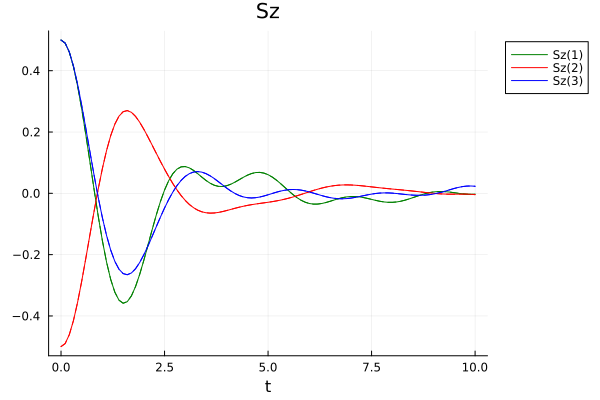
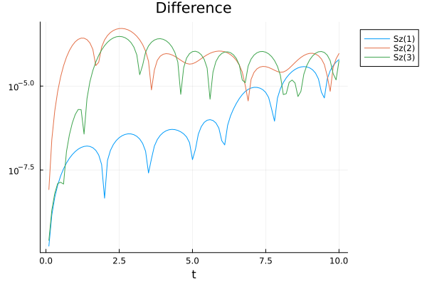

Time-evolving block decimation
The time-evolving block-decimation (TEBD) algorithm, introduced in [7] is the ideal time-evolution scheme to simulate one-dimensional many-body systems that are characterised by at most nearest-neighbour interactions. With the quantum state encoded in a Vidal-form MPS, the TEBD algorithm can be straightforwardly parallelised due to the Suzuki–Trotter decomposition of the time-evolution operator.
The MPSTimeEvolution package offers two variants of TEBD that differ in the order of the Suzuki-Trotter decomposition used for the time-evolution operator.
Before we begin, let's introduce some objects we will need in both cases. We'll use the same initial pure state and Hamiltonian as in the Standard TDVP1 example:
\[\ket{\psi_0} = \ket{\spinup} \otimes \ket{\spindown} \otimes \ket{\spinup} \otimes \ket{\spindown} \otimes \dotsb {}\]
and
\[H = -\frac12 \sum_{n=1}^{N-1} \pauliz[n] \pauliz[n+1] +\sum_{n=1}^{N} \paulix[n]\]
julia> using ITensorMPS, MPSTimeEvolution
julia> N = 10; s = siteinds("S=1/2", N);
julia> ψₜ = VidalMPS(s, n -> isodd(n) ? "↑" : "↓");
julia> h = OpSum();
julia> for n in 1:N
h += "σx", n
end
julia> for n in 1:N-1
h += -0.5, "σz", n, "σz", n+1
end
We also choose the time step and the total evolution time
julia> dt = 0.01; tmax = 10;
We define a callback object to track the \(z\)-axis magnetisation on the first three sites. By setting the last argument to 10dt, the expectation values will be computed only every tenth time step.
julia> cb = ExpValueCallback("Sz(1,2,3)", s, 10dt)
ExpValueCallback
Operators: Sz(1), Sz(2) and Sz(3)
No measurements performed
First-order Suzuki-Trotter decomposition
MPSTimeEvolution.tebd1! — Function
tebd1!(ψₜ::VidalMPS, H::OpSum, dt, tmax; kwargs...)Integrate the Schrödinger equation $d/dt ψₜ = -i H ψₜ$ using the TEBD algorithm with a 1st-order Trotter-Suzuki decomposition for $H$, where ψₜ is a MPS in the Vidal form, representing the state of the system.
Other arguments
dt: time step of the evolution.tmax: end time of the evolution.
Optional keyword arguments (with default values)
callback: a callback object describing the observables.maxdim=maxlinkdim(ψₜ): the maximum allowed bond dimension of the state during the evolution.cutoff=1e-15: cutoff for truncating small singular values during the evolution.progress=true: whether to display a progress bar during the evolution.
The tebd1! function evolves the VidalMPS ψₜ according to the specified Hamiltonian. It is enough to specfy the (full) Hamiltonian operator as an OpSum object: the tebd1! function will take care of computing the Suzuki-Trotter decomposition in odd and even terms. We also need to provide the maxdim and cutoff keyword argument in order to describe how the MPS has to be truncated after the application of the two-site time-evolution operators.
julia> tebd1!(ψₜ, h, dt, tmax; cutoff=1e-12, maxdim=10, progress=false, callback=cb)
Second-order Suzuki-Trotter decomposition
The interface of the TEBD function with the second-order Suzuki-Trotter algorithm is exactly the same as tebd1!.
MPSTimeEvolution.tebd2! — Function
tebd2!(ψₜ::VidalMPS, H::OpSum, dt, tmax; kwargs...)Integrate the Schrödinger equation $d/dt ψₜ = -i H ψₜ$ using the TEBD algorithm with a 2nd-order Trotter-Suzuki decomposition for $H$, where ψₜ is a MPS in the Vidal form, representing the state of the system.
Other arguments
dt: time step of the evolution.tmax: end time of the evolution.
Optional keyword arguments (with default values)
callback: a callback object describing the observables.maxdim=maxlinkdim(ψₜ): the maximum allowed bond dimension of the state during the evolution.cutoff=1e-15: cutoff for truncating small singular values during the evolution.progress=true: whether to display a progress bar during the evolution.
In the second-order Suzuki-Trotter decomposition, the time-evolution operator over a time step \(t\) is
\[U(t) = U_{odd}(t/2) U_{even}(t) U_{odd}(t/2);\]
if we don't need to compute the expectation values in cb after each time step, we can merge the \(U\sb{odd}(t/2)\) in the \(U(t)\) across time steps, i.e.
\[U(t)^k = U_{odd}(t/2) U_{even}(t) \bigl(U_{odd}(t) U_{even}(t)\bigr)^{k-1} U_{odd}(t/2)\]
which avoids some tensor multiplications and unnecessary SVDs. This is automatically done by the tebd2! function if the measurement time step saved in the callback object is equal to \(k>1\) times the time step dt.
Let's run the function, after resetting the state to its initial value, and creating a new callback object:
julia> ψₜ = VidalMPS(s, n -> isodd(n) ? "↑" : "↓");
julia> cb2 = ExpValueCallback("Sz(1,2,3)", s, 10dt);
julia> tebd2!(ψₜ, h, dt, tmax; cutoff=1e-12, maxdim=10, progress=false, callback=cb2)
We can see the results in the pictures below: the TEBD1 results are represented by dashed lines, and the TEDB2 results by solid lines. We find, as expected, that the two algorithm produce approximately the same results, which differ by approximately \(10^{-5}\) at the end of the run (which is fine, since we haven't been that careful to set up a numerical simulation with sensible parameters).

